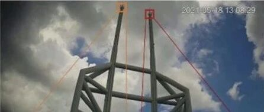

超高层建筑异常振动咋回事？视觉数字阴影技术给出答案
以下文章来源于Engineering ，作者顾栋炼,岳清瑞 等
中国工程院院刊，建设世界一流期刊，让工程造福人类，科技创造未来。

近日，一篇发表在中国工程院院刊《Engineering》上的研究论文，提出了一种基于计算机视觉的数字阴影建模与分析流程，并成功应用于实际工程案例，揭示了一座超高层建筑异常振动的结构动力原理。该研究由北京科技大学顾栋炼副教授、岳清瑞院士等学者完成，清华大学土木工程安全与耐久教育部重点实验室陆新征教授为通讯作者。
随着城市化进程加快，建筑结构的健康监测愈发重要。有限元方法在研究建筑结构行为时有局限性，数字孪生技术虽发展迅速，但结构有限元仿真耗时久。因此，数字阴影概念被广泛应用，它能通过传感器采集结构数据，更准确地预测建筑在服役过程中的结构行为。
此前，基于视觉的数字阴影与建筑健康监测技术多局限于实验室研究。该研究针对实际工程中摄像设备多为低分辨率单目摄像头的情况，采用深度学习超分辨率（SR）技术和基于单目视觉的三维位移测量方法，建立了建筑结构状态识别模型。
研究对象为中国一座 72 层、高 345.8 米的超高层建筑。2021 年 5 月，该建筑在正常气象条件下出现异常震动，导致人员紧急疏散，建筑停用 100 多天。事件调查组排除了多种潜在振动原因后，将重点聚焦于风荷载。

图1. (a)超高层建筑及(b)相应的监控视频。
研究采用基于生成对抗网络的 SR 技术，利用超分辨率神经网络（SRGAN） 对低分辨率监测视频进行超分辨率重建。与传统使用公共数据集训练不同，该研究使用目标桅杆的成对高分辨率（HR）和低分辨率（LR）图像训练 SRGAN，提升了对桅杆 SR 操作的精度。在三维位移测量方面，采用实例级位姿估计方法Dense Pose Object Detector（DPOD）模型，通过虚拟渲染构建训练数据集。基于位姿估计结果和关键点匹配，计算出桅杆顶部的三维位移，并获取了桅杆的固有振型和振动频率。
基于监测数据，研究人员对钢框架有限元模型进行修正。更新后的模型自然频率与监测结果吻合良好，能更准确反映钢框架动态特性。通过计算流体力学（CFD）模拟获得风荷载，结合更新后的钢框架有限元模型和建筑主体结构有限元模型，构建建筑的数字阴影（DS）模型进行模拟分析。结果表明，建筑顶部钢框架刚度退化，导致两根桅杆在风荷载作用下发生涡激振动，且振动位移幅值不均衡，对建筑主体结构施加周期性力，引发扭转共振，使楼层外侧人员明显感受到震动。

图2. 提出了基于视觉的DS工作流。

图3. (a)整个建筑物的DS模型和(b)模拟的固有频率和模态振型（条形附近的数字表示相对误差）。
该研究证明了数字阴影技术在评估现有建筑结构性能方面的重要性，为基于计算机视觉的实际结构数字阴影应用提供了可行方案，也为预防和减缓超高层建筑类似风险提供了策略，有助于延长全球在用建筑的使用寿命。此外，研究还探讨了通用传感设备在城市健康监测中的潜力，随着城市中监控摄像头等设备数量增加，有望实现从结构健康监测到城市健康监测的跨越。
文章信息：
Vision-Based Digital Shadowing to Reveal Hidden Structural Dynamics of a Real Supertall Building
基于视觉的数字阴影揭示了真实超高层建筑的结构动力原理
作者：
顾栋炼，岳清瑞，李丽，孙楚津，陆新征*
引用：
Donglian Gu, Qingrui Yue, Li Li, Chujin Sun, Xinzheng Lu. Vision-Based Digital Shadowing to Reveal Hidden Structural Dynamics of a Real Supertall Building. Engineering, 2024, 43(12): 146‒158
开放获取论文：
https://doi.org/10.1016/j.eng.2024.10.002